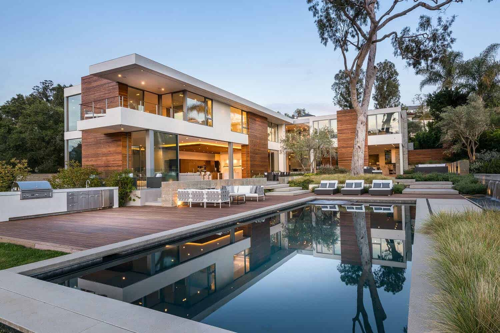
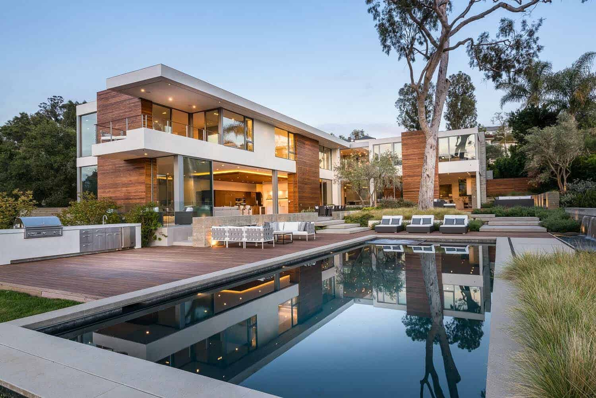

Exploring why the art of consciously bringing the outside world into our homes is so good for our
souls.
We yearn for a connection with nature. It’s hard-wired into us and even has a name: biophilia.
Meaning a love of life or living things, the term was coined by social psychologist Erich Fromm in
1964, before becoming popularised by E. O. Wilson, a biologist and Professor Emeritus at Harvard.
However, designers and architects ... more
While we always hope the holidays will be relaxed and joyful, stress can show up as we navigate
family dynamics, financial strains, and societal pressure.
Here we share some ideas to help you find mindful moments so you can return to calm ... more
Investigating the power of possessions to evoke emotions, and transport us through time – and how we
can treasure them, without them taking over our homes.
There are four boxes still sitting in my lounge long after the end of our three-month renovation. It
has been an exercise in logistics, but also a chance to (begrudgingly) rethink what I actually need
in my life... more
 
